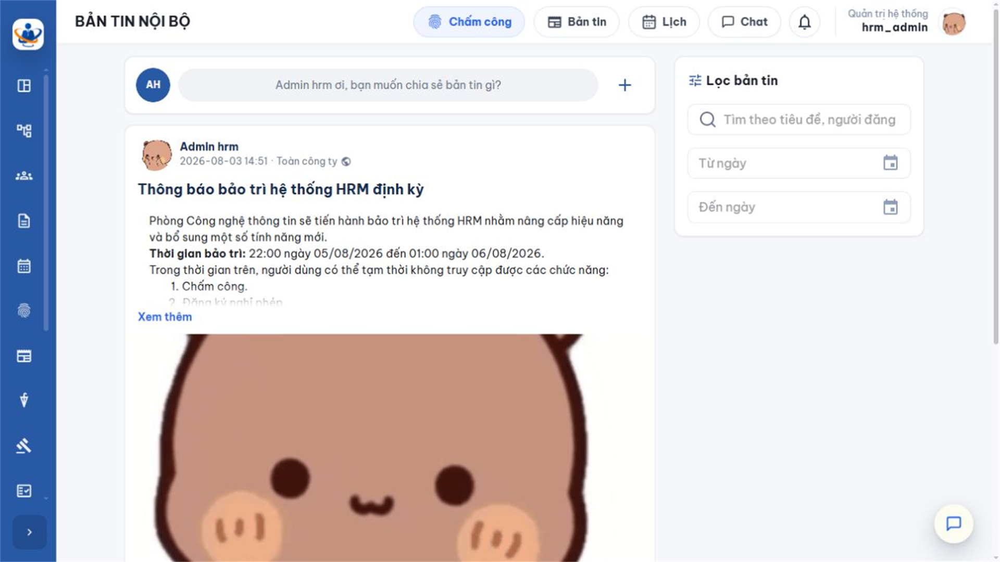
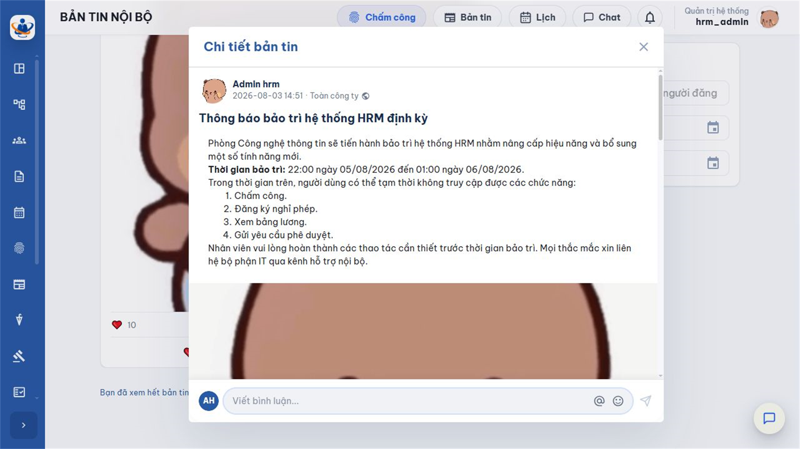
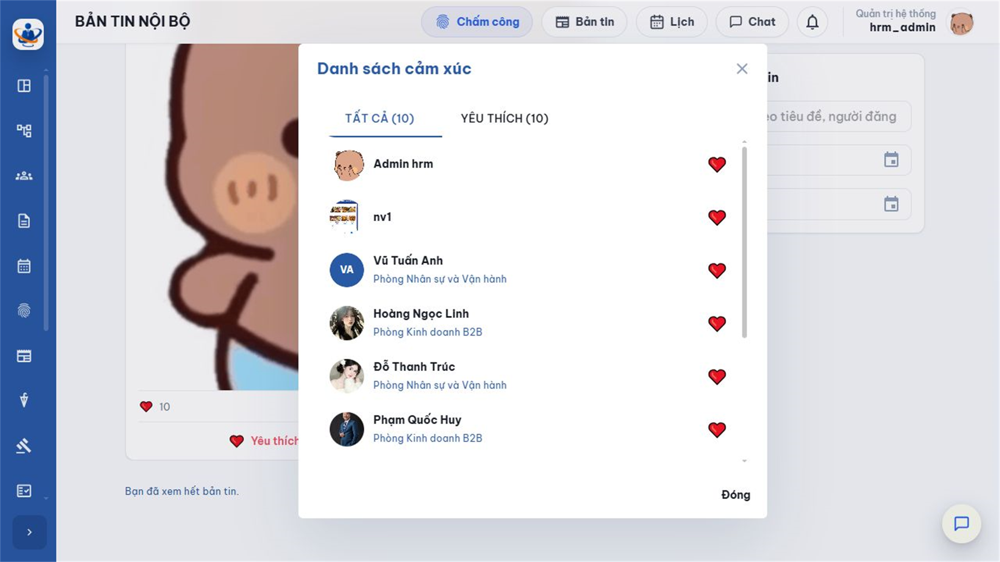
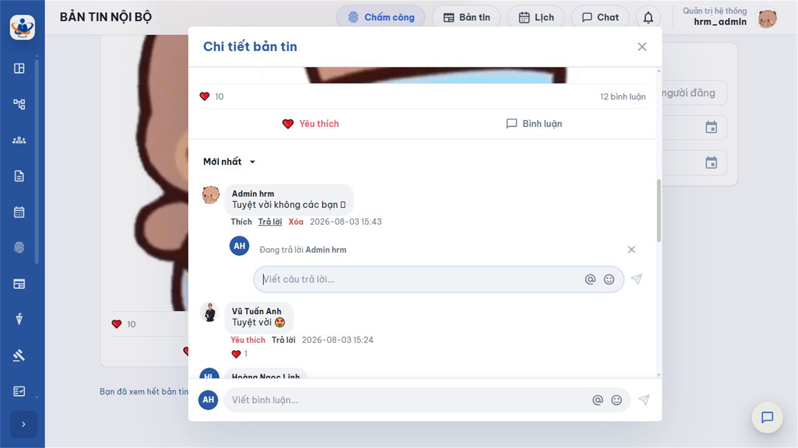
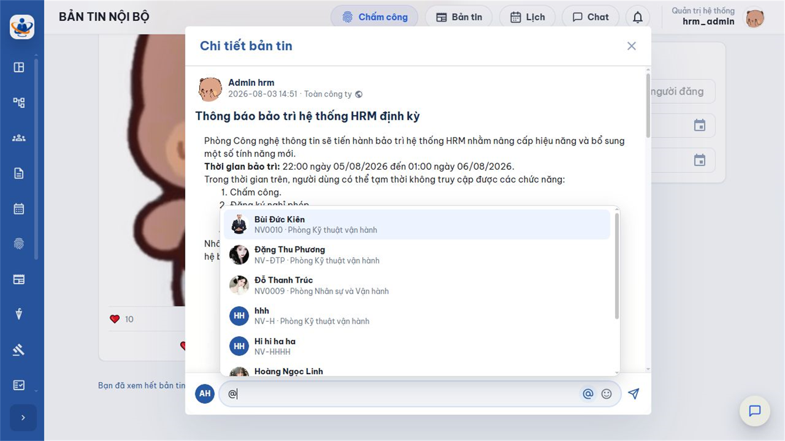

1. Mục đích, điều kiện hiển thị và luồng sử dụng
Bản tin của tôi là luồng thông tin nội bộ dành riêng cho người đang đăng nhập. Người dùng có thể đọc bản tin đã được phê duyệt, mở ảnh và tệp, bày tỏ cảm xúc, bình luận, trả lời bình luận và gắn thẻ đồng nghiệp phù hợp. Nội dung nhìn thấy phụ thuộc danh sách người nhận được hệ thống chốt khi bản tin phát hành.
1.1. Luồng sử dụng tổng quát
| 1. Bản tin được duyệt bước cuối Hệ thống chuyển trạng thái Đã duyệt, ghi thời điểm phát hành và chốt người nhận. |
| ↓ |
| 2. Người nhận mở Bản tin Danh sách hiển thị các nội dung được phép xem trong cùng doanh nghiệp. |
| ↓ |
| 3. Tìm hoặc lọc Dùng từ khóa và khoảng ngày để tìm đúng nội dung; cuộn trang để tải thêm. |
| ↓ |
| 4. Đọc chi tiết Mở rộng nội dung, xem ảnh, xem trước hoặc tải tệp đính kèm nếu có. |
| ↓ |
| 5. Tương tác Chọn cảm xúc; viết bình luận; trả lời; gắn thẻ hoặc bày tỏ cảm xúc với bình luận. |
| ↓ |
| 6. Nhận cập nhật Phản hồi mới được đồng bộ qua cơ chế thời gian thực; tải lại nếu kết nối bị gián đoạn. |
1.2. Điều kiện để một bản tin xuất hiện
- Bản tin đã hoàn tất quy trình và có trạng thái Đã duyệt.
- Người đang đăng nhập thuộc danh sách người nhận được chốt tại thời điểm phát hành.
- Bản tin và người dùng thuộc cùng doanh nghiệp.
- Bản tin chưa chuyển sang trạng thái Đã thu hồi.
| Phạm vi khi tạo | Ai được nhận khi phát hành | Lưu ý |
|---|---|---|
| Toàn công ty | Nhân viên đang hoạt động trong doanh nghiệp tại thời điểm phát hành. | Phù hợp thông báo chung; không dùng cho nội dung có dữ liệu riêng của một nhóm nhỏ. |
| Phòng ban | Nhân viên thuộc một hoặc nhiều phòng ban đã chọn khi hệ thống chốt người nhận. | Danh sách là ảnh chụp tại thời điểm phát hành; thay đổi phòng ban sau đó không viết lại lịch sử. |
| Người dùng cụ thể | Đúng các tài khoản/nhân viên được chọn. | Phù hợp nhóm nhỏ hoặc nội dung có phạm vi hạn chế; người không được chọn sẽ không thấy. |
| Không cần quyền Quản lý bản tin để đọc News.Manage dùng cho người tạo và quản lý nội dung. Người dùng thông thường vẫn xem và tương tác nếu là người nhận của bản tin đã duyệt. Việc không thấy một bản tin thường liên quan phạm vi, trạng thái hoặc thu hồi, không phải do thiếu quyền News.Manage. |
2. Màn hình Bản tin của tôi
Mở Bản tin nội bộ > Bản tin. Màn hình được trình bày theo dạng luồng thẻ: phần trên là bộ lọc, phía dưới là các bản tin mới nhất mà người dùng được nhận.

| Khu vực | Ý nghĩa và cách sử dụng |
|---|---|
| Tìm kiếm | Nhập từ khóa liên quan tới nội dung cần tìm. Nên dùng cụm ngắn, tên chương trình, đơn vị hoặc từ nổi bật trong tiêu đề. |
| Từ ngày/Đến ngày | Giới hạn bản tin theo thời gian phát hành. Đặt cả hai đầu khoảng để tránh lấy nhầm giai đoạn. |
| Xóa bộ lọc | Đưa từ khóa và ngày về trống, sau đó tải lại luồng đầy đủ. |
| Thẻ bản tin | Cho biết người tạo, thời gian, phạm vi, tiêu đề, nội dung rút gọn, tệp, tổng cảm xúc và bình luận. |
| Khu vực tương tác | Cho phép chọn cảm xúc, xem danh sách người tương tác, mở bình luận và gửi phản hồi. |
3. Tìm kiếm, lọc và tải thêm bản tin
3.1. Tìm theo từ khóa
- Chọn ô Tìm kiếm.
- Nhập từ khóa. Tránh câu quá dài hoặc các từ quá chung như “thông báo”.
- Chờ hệ thống tải lại danh sách. Nếu chưa đúng, rút gọn từ khóa hoặc xóa và nhập từ khác.
3.2. Lọc theo ngày phát hành
- Chọn Từ ngày, sau đó chọn ngày bắt đầu.
- Chọn Đến ngày, sau đó chọn ngày kết thúc không nhỏ hơn ngày bắt đầu.
- Kết hợp từ khóa nếu cần. Khi muốn trở về toàn bộ luồng, chọn Xóa bộ lọc.
Khoảng ngày áp dụng cho thời điểm bản tin được duyệt và phát hành, không phải ngày người tạo bắt đầu soạn Nháp.
3.3. Tải thêm khi cuộn
Luồng sử dụng cơ chế tải dần. Khi cuộn gần cuối danh sách, hệ thống tự lấy trang tiếp theo thay vì hiển thị phân trang. Không cuộn liên tục quá nhanh khi mạng chậm; chờ chỉ báo tải hoàn tất để tránh tưởng rằng không còn dữ liệu.
| Bộ lọc được áp dụng đồng thời Khi vừa nhập từ khóa vừa chọn khoảng ngày, bản tin phải thỏa cả hai điều kiện mới xuất hiện. Nếu kết quả trống, hãy xóa từng điều kiện để xác định bộ lọc nào đang giới hạn dữ liệu. |
4. Đọc nội dung, xem ảnh và tệp đính kèm
4.1. Mở nội dung đầy đủ
Bản tin dài có thể được rút gọn trên thẻ. Chọn vùng mở rộng hoặc liên kết xem thêm để đọc toàn bộ. Nội dung có thể gồm đoạn văn, chữ đậm/nghiêng/gạch chân, danh sách, liên kết và hình ảnh do người tạo định dạng.

4.2. Xem ảnh
- Chọn ảnh trong nội dung hoặc khu vực tệp hình để mở trình xem ảnh.
- Nếu có nhiều ảnh, dùng điều khiển trước/sau để chuyển ảnh; đóng trình xem để trở lại vị trí đang đọc.
- Không chụp lại hoặc phát tán ảnh ra ngoài doanh nghiệp nếu nội dung có giới hạn sử dụng.
4.3. Xem hoặc tải tệp đính kèm
- Chọn tên tệp để xem trước khi định dạng được hệ thống hỗ trợ.
- Dùng tải xuống khi cần lưu tệp về máy. Kiểm tra tên tệp và nguồn trước khi mở.
- Nếu trình duyệt không xem trước được, tải tệp rồi mở bằng ứng dụng phù hợp; không đổi phần mở rộng của tệp.
- Tệp đã tải xuống là bản tại thời điểm phát hành. Nếu có bản tin thay thế, ưu tiên tệp trong thông báo mới nhất.
5. Bày tỏ cảm xúc
Mỗi người dùng có tối đa một cảm xúc đang chọn trên một bản tin. Có thể đổi sang cảm xúc khác hoặc bỏ cảm xúc hiện tại.
| Lựa chọn | Ý nghĩa gợi ý |
|---|---|
| Thích | Đã đọc, đồng tình hoặc đánh giá nội dung hữu ích. |
| Yêu thích | Đánh giá rất tích cực, phù hợp nội dung chúc mừng hoặc ghi nhận. |
| Haha | Phản hồi vui vẻ với nội dung có tính giải trí; không dùng với sự cố hoặc thông báo nghiêm túc. |
| Ngạc nhiên | Thể hiện bất ngờ trước thông tin, không mặc nhiên đồng nghĩa đồng ý hay phản đối. |
| Buồn | Phù hợp thông tin đáng tiếc, chia sẻ hoặc tổn thất. |
| Phẫn nộ | Thể hiện phản ứng tiêu cực mạnh; cân nhắc bối cảnh và quy tắc giao tiếp nội bộ trước khi dùng. |
- Đưa chuột hoặc chọn khu vực cảm xúc để hiển thị các lựa chọn.
- Chọn một cảm xúc. Tổng số và biểu tượng được cập nhật.
- Muốn đổi: mở danh sách và chọn cảm xúc khác; cảm xúc cũ được thay thế.
- Muốn bỏ: chọn lại đúng cảm xúc đang dùng.

Số lượng cảm xúc là thông tin tham khảo, không phải phiếu biểu quyết trừ khi doanh nghiệp có quy định riêng. Người dùng cần đọc nội dung đầy đủ trước khi phản ứng.
6. Bình luận, trả lời và gắn thẻ
6.1. Viết bình luận mới
- Mở bản tin và chọn ô nhập bình luận.
- Nhập nội dung tối đa 4.000 ký tự. Có thể dùng biểu tượng cảm xúc để bổ sung sắc thái.
- Đọc lại nội dung, kiểm tra người được nhắc tới và chọn nút gửi.
- Chờ bình luận xuất hiện. Nếu mạng chậm, không gửi lặp lại cùng một nội dung.
6.2. Sắp xếp bình luận
| Lựa chọn | Ý nghĩa |
|---|---|
| Mới nhất | Đưa bình luận mới lên trước, phù hợp khi theo dõi trao đổi đang diễn ra. |
| Cũ nhất | Đọc theo trình tự thời gian từ đầu, phù hợp khi cần hiểu toàn bộ mạch thảo luận. |
6.3. Trả lời bình luận
- Tại bình luận cần phản hồi, chọn Trả lời.
- Hệ thống mở ô nhập gắn với bình luận đó. Nhập nội dung rõ ràng, tránh tạo một trao đổi không liên quan.
- Chọn gửi. Câu trả lời hiển thị trong nhánh của bình luận gốc.

6.4. Gắn thẻ đồng nghiệp bằng ký hiệu @
- Trong ô bình luận hoặc trả lời, nhập ký hiệu @ rồi gõ một phần tên hoặc mã nhân viên.
- Chọn đúng người trong danh sách gợi ý. Hệ thống giới hạn số ứng viên gợi ý để danh sách dễ dùng.
- Tiếp tục nhập nội dung và gửi. Không chỉ gõ tên bằng văn bản nếu muốn tạo liên kết gắn thẻ.

| Gắn thẻ không mở rộng quyền xem bản tin Chỉ gắn thẻ người đang có quyền xem theo danh sách người nhận. Việc nhắc một người không thuộc phạm vi không tự cấp cho họ quyền truy cập nội dung. |
6.5. Cảm xúc và xóa bình luận
- Có thể bày tỏ cảm xúc với bình luận tương tự cách phản ứng với bản tin; mỗi người có một cảm xúc hiện tại trên mỗi bình luận.
- Tác giả được xóa bình luận của chính mình khi giao diện cho phép. Hãy kiểm tra các câu trả lời liên quan trước khi xóa để tránh làm đứt mạch trao đổi.
- Không chỉnh sửa hoặc xóa nội dung của người khác; trường hợp vi phạm cần báo đầu mối quản trị theo quy định doanh nghiệp.
7. Cập nhật thời gian thực và quy tắc hiển thị
7.1. Cập nhật thời gian thực
Khi đang mở trang Bản tin, ứng dụng nhận các thay đổi như bản tin mới, cảm xúc và bình luận qua kênh thời gian thực. Dữ liệu có thể tự cập nhật mà không cần tải lại toàn trang. Nếu máy ngủ, đổi mạng hoặc để tab mở quá lâu, kết nối có thể gián đoạn; khi đó tải lại trang để đồng bộ.
7.2. Bản tin được phát hành sau khi đang mở trang
Nếu người dùng thuộc danh sách nhận của bản tin vừa được duyệt, nội dung có thể xuất hiện trong luồng qua cơ chế cập nhật. Nếu đang dùng bộ lọc không phù hợp, bản tin mới vẫn bị ẩn cho tới khi xóa bộ lọc.
7.3. Khi bản tin bị thu hồi
Sau khi yêu cầu thu hồi được phê duyệt hoàn tất, bản tin chuyển Đã thu hồi và không còn hiển thị trên luồng tin của người nhận. Việc thu hồi không có nghĩa là sửa nội dung cũ; nếu cần thông tin thay thế, đơn vị phụ trách phải phát hành bản tin mới.
| Không sử dụng bản sao đã tải xuống sau khi có thông báo thu hồi Một tệp đã tải về máy không tự bị xóa khi bản tin bị thu hồi. Khi biết nội dung đã bị gỡ hoặc có bản thay thế, ngừng sử dụng bản cũ và thực hiện theo thông báo mới nhất. |
8. Lỗi thường gặp và quy tắc giao tiếp
8.1. Lỗi thường gặp
| Hiện tượng | Nguyên nhân thường gặp | Cách xử lý |
|---|---|---|
| Không thấy bản tin đồng nghiệp đang xem | Không thuộc danh sách người nhận, bản tin chưa duyệt, đã thu hồi hoặc đang có bộ lọc. | Xóa bộ lọc, tải lại; hỏi người tạo về phạm vi. Không yêu cầu mở rộng quyền nếu nội dung không dành cho mình. |
| Tìm kiếm không có kết quả | Từ khóa quá dài, khoảng ngày hẹp hoặc các điều kiện đang kết hợp. | Rút gọn từ khóa, xóa ngày hoặc chọn Xóa bộ lọc. |
| Không mở được tệp | Trình duyệt không hỗ trợ xem trước, mạng gián đoạn hoặc thiếu ứng dụng đọc tệp. | Tải xuống, kiểm tra định dạng và mở bằng phần mềm phù hợp; liên hệ người tạo nếu tệp hỏng. |
| Gửi bình luận nhưng chưa thấy | Mạng chậm, kết nối thời gian thực gián đoạn hoặc nội dung vượt 4.000 ký tự. | Chờ một lần, tải lại, rút gọn nội dung; tránh bấm gửi nhiều lần. |
| Không tìm thấy người để gắn thẻ | Từ khóa chưa đúng, người đó không thuộc phạm vi phù hợp hoặc tài khoản không hoạt động. | Tìm bằng tên/mã chính xác; kiểm tra người đó có quyền xem bản tin. |
| Số cảm xúc/bình luận chưa đổi | Màn hình đang dùng dữ liệu cũ hoặc kết nối thời gian thực bị ngắt. | Tải lại trang và mở lại chi tiết bản tin. |
| Bản tin vừa biến mất | Đã được thu hồi, không còn phù hợp bộ lọc hoặc quyền/danh sách người nhận thay đổi do xử lý dữ liệu. | Xóa bộ lọc; nếu cần truy vết nghiệp vụ, liên hệ người quản lý bản tin thay vì dùng đường dẫn/bản sao cũ. |
8.2. Quy tắc giao tiếp nội bộ
- Đọc đầy đủ nội dung và tệp liên quan trước khi phản ứng hoặc bình luận.
- Trao đổi đúng chủ đề, ngắn gọn, lịch sự; không dùng từ ngữ công kích, mỉa mai hoặc gây hiểu nhầm.
- Không đưa mật khẩu, thông tin lương, dữ liệu cá nhân nhạy cảm hoặc tài liệu mật vào bình luận.
- Chỉ gắn thẻ người thực sự cần biết; kiểm tra đúng người khi trùng tên.
- Không xem số cảm xúc là kết quả biểu quyết chính thức nếu doanh nghiệp chưa quy định.
- Nếu phát hiện nội dung sai hoặc không phù hợp, báo người tạo/quản lý bản tin bằng kênh chính thức; không lan truyền bản sao.
8.3. Danh sách kiểm tra nhanh
- Đúng bản tin, đúng thời điểm và đúng phạm vi.
- Đã đọc toàn bộ nội dung, mở tệp và kiểm tra phiên bản.
- Cảm xúc phù hợp bối cảnh.
- Bình luận không quá 4.000 ký tự, không chứa dữ liệu nhạy cảm.
- Trả lời đúng nhánh và gắn thẻ đúng người.
- Đã tải lại trang nếu thấy dữ liệu không đồng bộ.